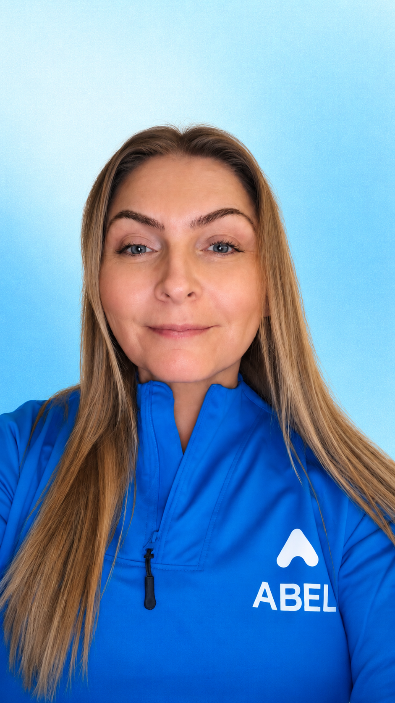

Vane- og atferdsendring
Støtte til å forstå egne mønstre og bygge vaner som kan vare over tid.
Marta Opland Sertifisert helseveileder fra ABEL Instituttet
Personlig helseveiledning for voksne som ønsker bedre vaner, økt mestring og en helsefremmende livsstil som fungerer over tid.
Digital oppfølging – tilgjengelig i hele Norge.
Et tilbud tilpasset deg
Veiledningen passer for voksne som ønsker støtte til å gjøre realistiske og varige endringer i hverdagen – med fokus på hele deg.
Tjenester
Helse handler ofte om mer enn ett enkelt område. Derfor tar oppfølgingen utgangspunkt i hele livssituasjonen din, målene dine og det som er realistisk å gjennomføre i hverdagen.
Støtte til å forstå egne mønstre og bygge vaner som kan vare over tid.
Hjelp til å skape en mer håndterbar hverdag med realistiske prioriteringer og mål.
Oppfølgingen ser på hvordan ulike deler av livet påvirker helse, mestring og overskudd.
Hyppighet og innhold tilpasses behovene og situasjonen til den enkelte.
En enkel start
Fra første samtale til videre oppfølging – i et tempo som passer deg.
Dere møtes til en gratis og uforpliktende digital kartleggingssamtale på 45 minutter. Her blir dere kjent, ser på situasjonen din og snakker om hva du ønsker støtte til videre.
Marta hjelper deg med å se på behov, vaner og mål, slik at oppfølgingen kan tilpasses livet og hverdagen din.
Videre oppfølging skjer gjennom digitale samtaler. Hyppigheten velges ut fra hvor tett oppfølging du ønsker.

Bli kjent med veilederen din
Marta Opland er sertifisert helseveileder fra ABEL Instituttet og har arbeidet innen helse og omsorg gjennom hele sitt voksne liv. Hun har også utdannelse som helsepedagog, yrkesfaglærer, personlig trener og mental trener.
Gjennom mange år i arbeid med mennesker har Marta fått bred erfaring med å møte personer i ulike livssituasjoner. Hun er opptatt av å se hele mennesket og finne løsninger som er realistiske, trygge og tilpasset den enkeltes hverdag.
Marta møter den enkelte med respekt for at endring kan skje på ulike måter. Ofte finnes viktige svar allerede i en selv, men støtte, refleksjon og veiledning kan gjøre det lettere å se dem og finne en vei som kjennes riktig og gjennomførbar.
Ta det første steget
Legg igjen kontaktopplysningene dine, så tar Marta kontakt for å avtale en gratis digital kartleggingssamtale på 45 minutter.
Marta Opland E-postmarta.opland@abel.no Telefon934 17 575TilgjengelighetDigital oppfølging i hele Norge
Start med en gratis og uforpliktende kartleggingssamtale på 45 minutter.